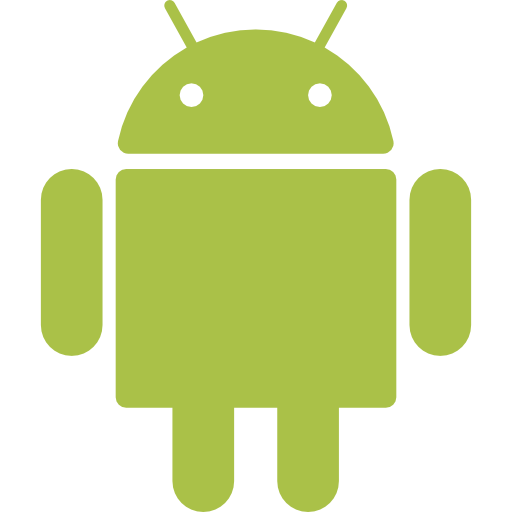

Más sobre la aplicación Dots
Introducción
El jugador es el punto blanco del centro de la pantalla. El juego consiste en mover el punto con el dedo por la pantalla para consumir los puntos pequeños, aumentando de tamaño tu punto y esquivar los grandes, que hacen que se acabe la partida.
Está inspirado en el famoso juego online Agar.io. A diferencia de este, es un juego de un solo jugador, pensado en entretener al usuario intentando lograr la máxima puntuación posible.
He buscado que el fondo sea de un color crema agradable al usuario. El color blanco del punto del jugador ayuda a saber dónde está en cada momento y los demás puntos generan su propio color aleatorio para que cada partida sea única y diferente.
Mecánicas de juego
El punto blanco se controla pulsando la pantalla en cualquier parte y moviendo el dedo hacia donde quiera dirigir el punto. El punto blanco se moverá en la pantalla exactamente como lo haga el dedo.
El objetivo es comer todos los puntos pequeños que puedas esquivando los puntos grandes que hacen que la partida acabe. Cuando el punto blanco llega a un tamaño demasiado grande, el juego te envía al siguiente nivel. Esto ocurre de forma indefinida, teniendo niveles prácticamente infinitos para acumular toda la puntuación posible.
Si llevas mucha puntuación, puedes pausar el juego pulsando en la parte superior derecha y volver cuando estés listo.
Sobre la programación
Cuanto mayor se hace el punto blanco del jugador, aparecen pelotas tanto más pequeñas como más grandes, para que la dinámica del juego no se detenga.
Los puntos aparecen fuera de la pantalla, con una dirección y fuerza aleatoria; una vez que salen de la pantalla, volverán a aparecer en la parte contraria, como si dieran la vuelta.
Si el punto del jugador es llevado fuera de la pantalla, volverá de forma automática hasta que el jugador pueda verlo, al dejar de pulsar en la pantalla.
El color de los puntos que aparecen se genera de forma aleatoria, eligiendo entre 0 y 255 los valores de R, G y B.
Acceso al juego
En el enlace de descarga, pueden ir a Drive y descargarlo completamente gratuito, instalarlo en su teléfono Android y jugarlo sin problemas.
También pueden ver el código en el enlace al repositorio de Github.
Información del proyecto
- CategoríaMultiplataforma
- IDEAndroid Studio
- Tecnologías


- Repositorio github.com/DSalado97/RepositorioDots
- Descargar Drive